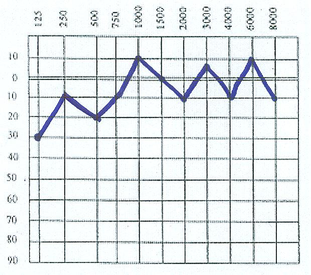
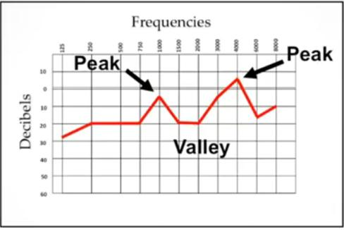
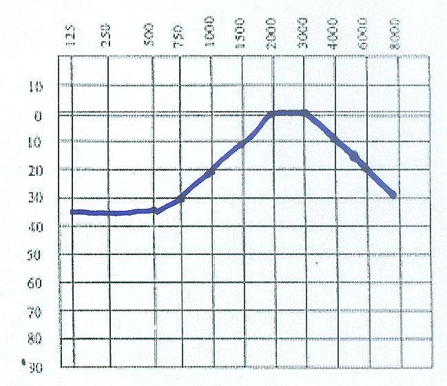
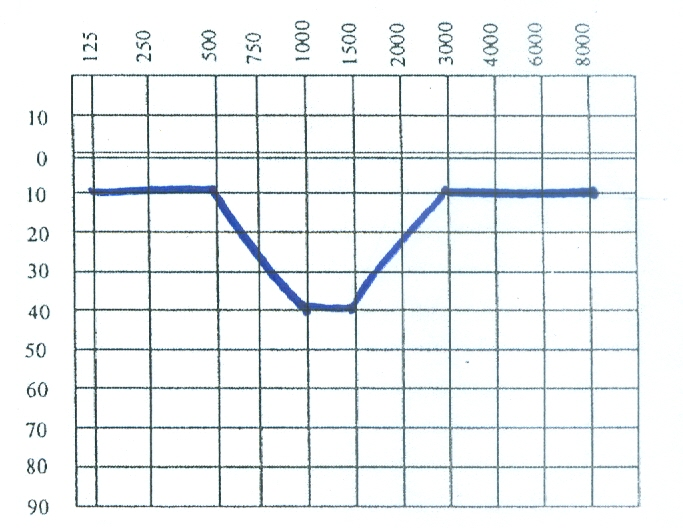
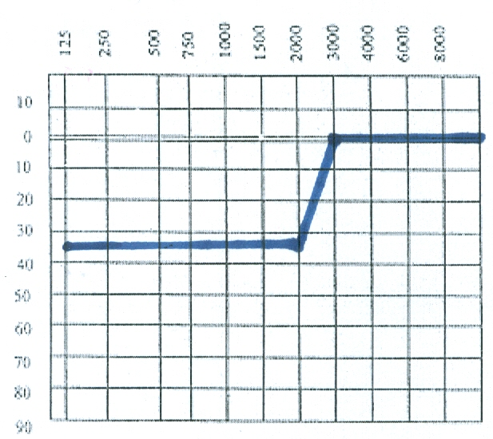
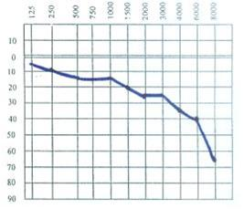

청각왜곡이 있으면:소리가 사실과 다르게 들리는 것입니다.
- - 소리가 실제보다 크게
- - 소리가 실제보다 작게, 약하게, 희미하게
- - 소리의 순서가 전환되어
- - 소리의 앞뒤 음소가 혼합되어
- - 기타(소리의 변질) 등
1) 기복이 심한 청력도


인접 주파수와 소리역치 차이가 심하여 주파수간 심한 불균형적인 크기로 소리를 듣게되는 청력형입니다. 여러 개의 기복(여러 개의 픽과 밸리)이 있으면, 솟아오른 픽들 사이에, 아래로 내려간 밸리 주파수의 소리들이 차단되어 말소리 구별이 어렵게 되고 이해상의 오류가 있게 됩니다. 기복의 수가 많을수록, 기복의 경사크기가 클수록 심한 청각왜곡이 나타납니다.
2) 점진적인 상승, 하강 청력도

청력역치가 주파수간 지속적으로 상승하거나 또는 하강하여 점진적으로 소리를 크게, 또는 작게 듣게되는 청력형입니다. 이러한 형태의 청각은 일부소리가 차단되어 일부 소리음을 놓치거나 약하게 듣게됩니다. 청력역치가 주파수간에 점진적으로 지속적으로 상승하거나 하강할 경우, 경사 크기는 최저 기저점에서 최고점까지이며, 경사크기가 클수록 심한 청각왜곡을 유발합니다.
3) 골짜기 형

청력역치가 특정 주파수 구간에서 다운되는 골짜기 형태의 청각으로, 해당 특정 구간의 주파수와 데시벨의 소리를 상대적으로 약하게, 또는 잘 듣지 못하게 됩니다.
4) 고주파 상승형

저주파수 음을 상대적으로 약하게 듣고 고주파수 음을 상대적으로 크게 듣는 청력형으로, 대부분의 소음에 해당하는 고주파수 영역의 소리를 지나치게 크게 듣는 반면에, 일상 생활영역, 사람의 말소리 영역의 주파수 소리를 상대적으로 약하게 듣는 청력형입니다.
5) 노인성 난청형

고주파수부터 청력이 떨어지는 청력형입니다. 흔히 이명이 동반됩니다.
!--